Before each takeoff the crew needs the takeoff weight limit of the runway, the FLEX temperature (reduced thrust), the speeds V1, VR, V2 and the flaps. On the real A380 they come from the OIS takeoff application or from the airline (company takeoff data, sent to the FMS by datalink). The flyPad calculator does the computation; SEND TO FMS plays the airline: the MFD receives the data as company T.O data, and the crew checks and inserts it, as in FCOM DSC-22-FMS-20-30.
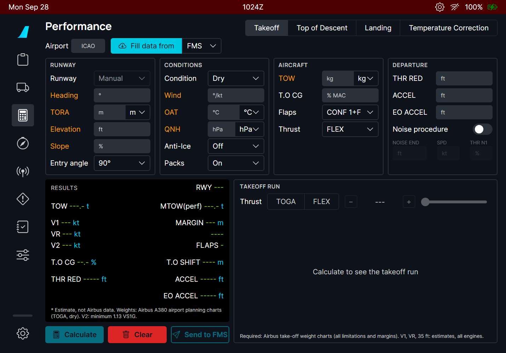
| Part | Contents |
|---|---|
| Airport, Fill data from | ICAO code; imports from the FMS (departure, runway, TOW, CG, THR RED / ACCEL), the OFP (SimBrief) or the METAR (wind, OAT, QNH). |
| RUNWAY | Runway from the list (or Manual), heading, TORA, elevation, slope, and the entry angle (90° or 180° turn onto the runway, or 0° when rolling straight on: it sets the line-up distance lost). |
| CONDITIONS | Runway condition, wind, OAT, QNH, anti-ice, packs. |
| AIRCRAFT | TOW (kg, t or lb), T.O CG in % MAC, flaps (CONF 1+F, 2, 3 or OPT = the best one), thrust (TOGA or FLEX). |
| DEPARTURE | THR RED, ACCEL, EO ACCEL altitudes (they default to the elevation + 1500 ft), and the noise abatement procedure (NOISE END altitude, speed, N1). |
| RESULTS | The results in the layout of the OIS takeoff application (FCOM PER-TOF-TOR-SRS). |
| TAKEOFF RUN | The runway with the V1, VR and 35 ft points, the required distance and the margin, for TOGA or any FLEX temperature of the allowed range. |
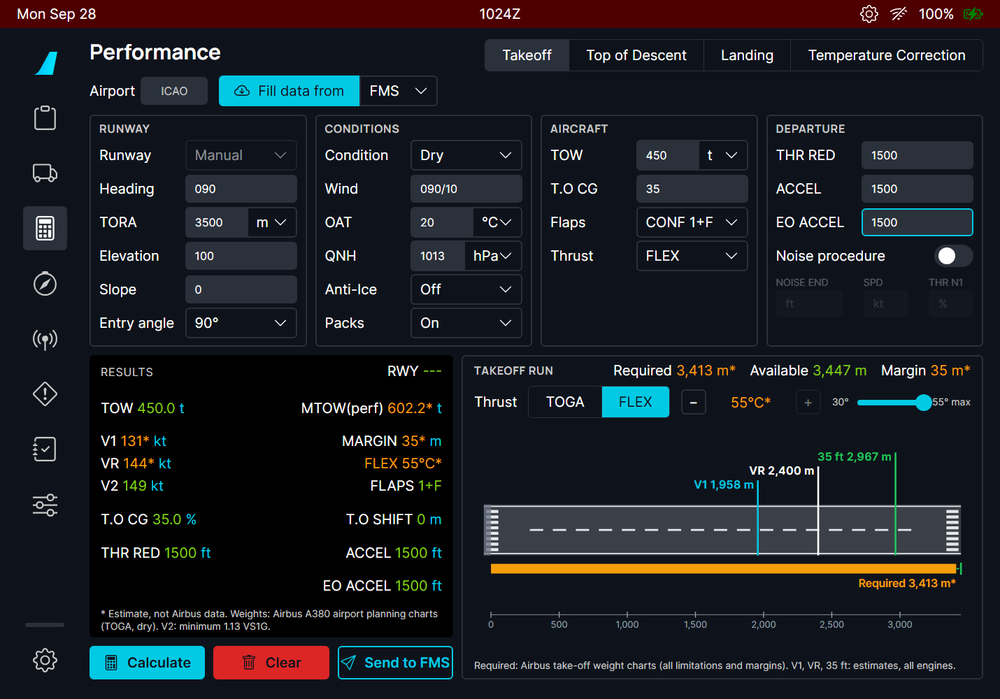
| Line | Meaning |
|---|---|
| TOW / MTOW(perf) | Your takeoff weight, and the maximum the runway and conditions allow at TOGA. |
| V1, VR, V2 | The takeoff speeds. V2 is at least 1.13 VS1G and 1.10 VMCA, VR at least 1.05 VMCA, V1 at least VMCG (FCOM PER-TOF-TOR-SRS). |
| MARGIN | Runway left beyond the required distance. |
| FLEX / TOGA | The FLEX temperature, or TOGA. |
| FLAPS, T.O CG, T.O SHIFT | The configuration, the CG entered, the takeoff shift (distance lost at line-up or an intersection). |
| THR RED, ACCEL, EO ACCEL | The altitudes of the DEPARTURE section. |
The TAKEOFF RUN panel lets you look at the run for TOGA, or for any FLEX temperature between the OAT and the maximum (FCOM PER-TOF-THR-FLX). Use - / + or the slider; the speeds and the run follow.
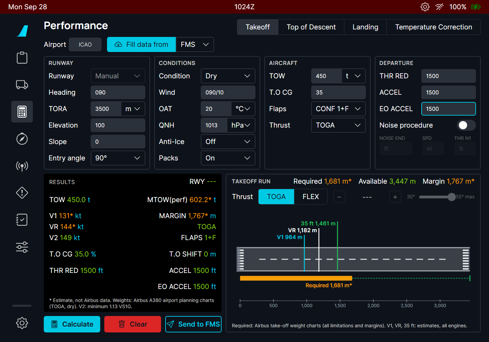
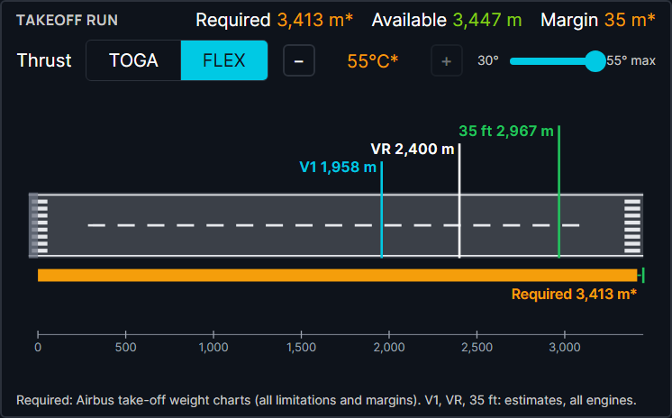
Send to FMS sends the thrust selected for the takeoff run only (TOGA, or FLEX at its temperature), with its own speeds.
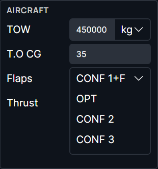
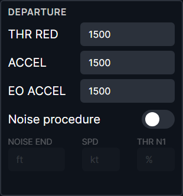
When the takeoff is not possible, a message says why and there is no result:
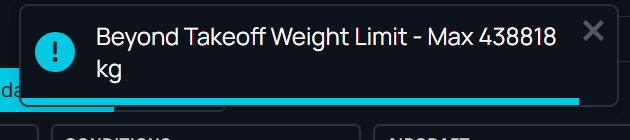
| Message | Meaning |
|---|---|
| Beyond Takeoff Weight Limit - Max ... | TOW above the runway limit: reduce the weight or use another runway. |
| CG Outside Takeoff Envelope | The CG is outside the A380 takeoff CG envelope for this weight. |
| Above Structural MTOW | TOW above 510 t. |
| Only dry runways are covered... | The A380 data has no wet or contaminated takeoff. |
| Runway shorter than the A380 performance data (1700 m) | The charts start at 1700 m. |
| Above Maximum Tailwind / OAT / Pressure Altitude | Outside the A380 limits (FCOM LIM-12). |
| Flex Not Possible | No FLEX temperature is possible at this weight: take off at TOGA. |
The MFD PERF T.O page gets two buttons: CPNY T.O REQUEST (ask the airline) and, once data has arrived, RECEIVED CPNY T.O.
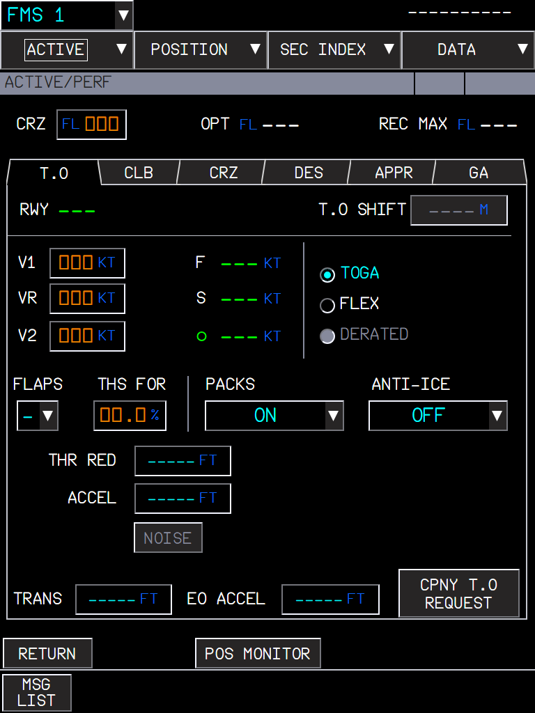
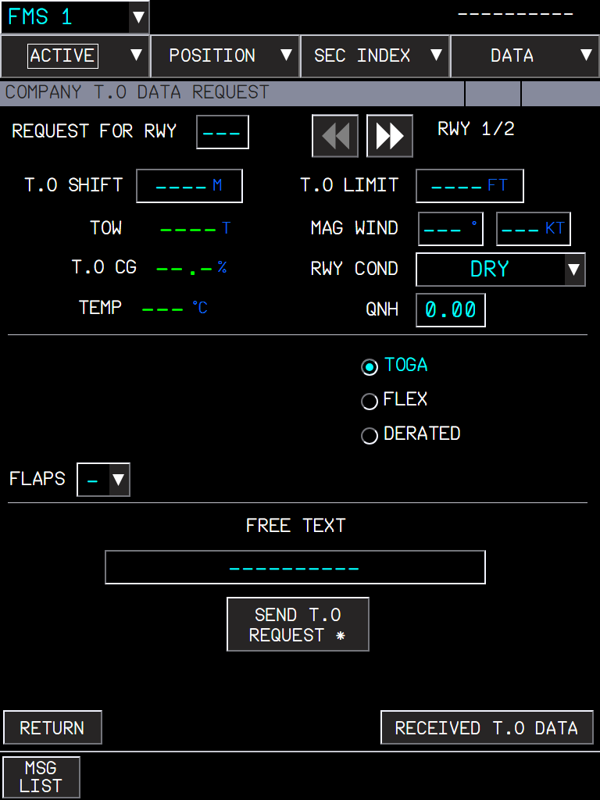
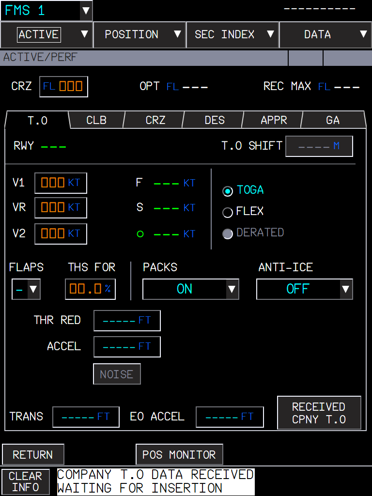
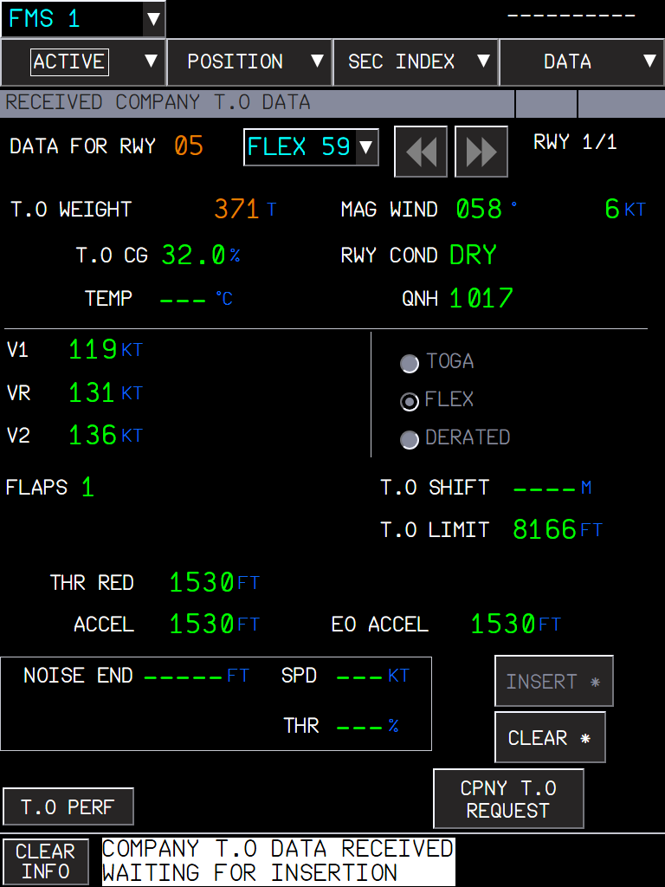
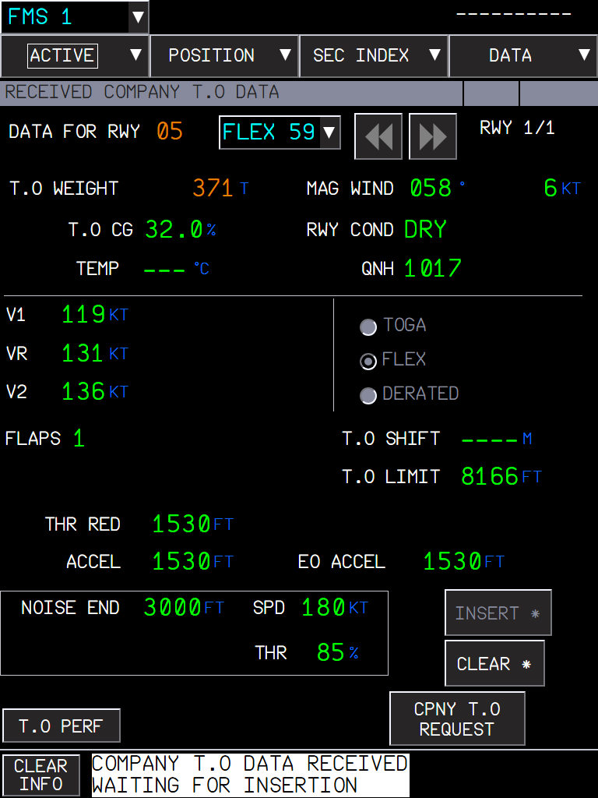
| Situation | What you should see |
|---|---|
| Inputs missing | Amber labels; Calculate stays dim. |
| Calculate with valid inputs | RESULTS and the takeoff run; FLEX at its maximum by default. |
| TOW too high, CG out of envelope, wet runway... | A message with the reason; no result. |
| Send to FMS with a runway from the list | "Takeoff data sent to the FMS: RECEIVED CPNY T.O on the PERF page"; the MFD shows the data a moment later. |
| Send to FMS with a manual runway | Nothing is sent: the FMS needs the runway ident. |
| RECEIVED page, other runway than the flight plan | Runway in amber; INSERT not available. |
| INSERT | PERF T.O filled; THS FOR still to enter. |
| Limitation | Why | What to do |
|---|---|---|
| Dry runways only. | The only public A380 takeoff data is the takeoff weight charts of the Airbus A380 Aircraft Characteristics (dry, ISA and ISA+15, runway 1700-5100 m, altitude 0-8000 ft). | On a wet runway, use the dry result with extra margin, as a training estimate only. |
| Speeds, FLEX, wind, slope and temperature effects are estimates (amber *). | The charts give weights only. The rest is a model fitted on them and checked on the FCOM examples (FLEX 38 at 560 t / 614 t). | - |
| The run distances (V1, VR, 35 ft points) are all-engine estimates. | No A380 distance data is public. | - |
| Send to FMS needs a runway from the list. | The FMS checks the uplink against its departure runway. | Choose the runway in the list. |
| Not certified data. | For simulation and training. | - |